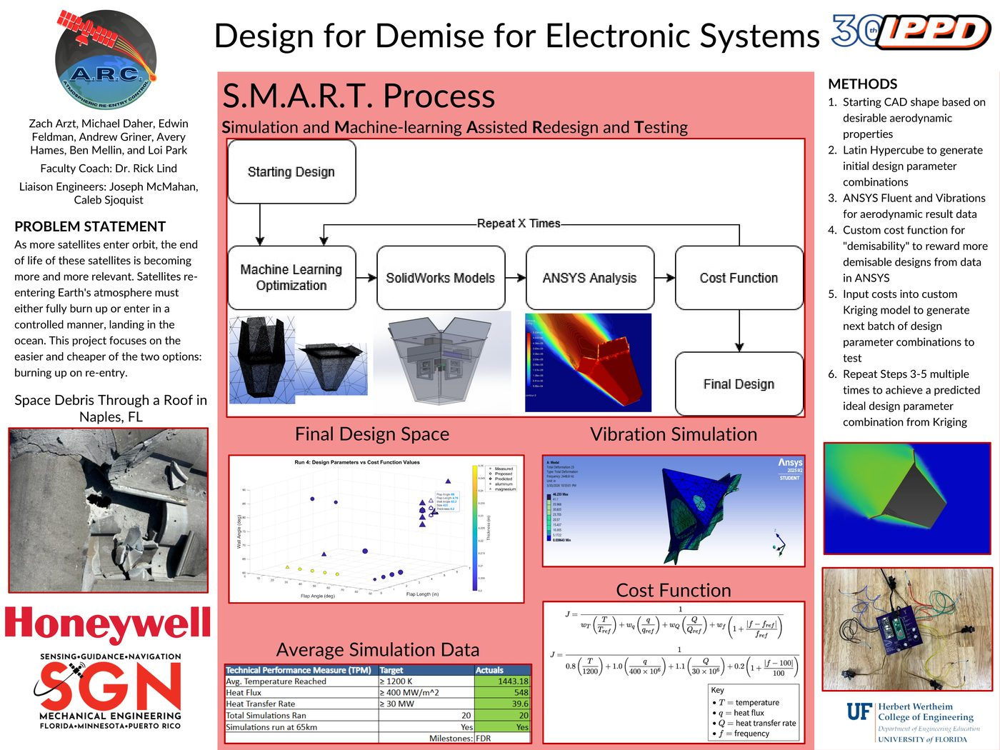

Ben Mellin
Materials engineer specializing in aerospace structures, high-temperature materials, and simulation.
Materials science & engineering graduate of the University of Florida, Cum Laude, May 2026, with aerospace experience through the IPPD program, where Honeywell Aerospace served as industry partner. Currently interviewing for full time roles across defense and aerospace, spanning materials engineering, manufacturing, and applied software.
Projects

Atmospheric Re-Entry Control — Honeywell Aerospace
Led the physical prototype sub-team and owned the full materials selection
workstream within a 7-person team, developing a custom S.M.A.R.T. (Simulation
and Machine-learning Assisted Redesign and Testing) methodology that replaced
trial-and-error with an automated, data-driven design loop using Kriging
models and ANSYS simulation to optimize a housing for atmospheric demise.
Engineered deployable flaps to increase surface heating during re-entry,
validated at 548 MW/m² heat flux and an average
temperature of 1,443 K, clearing every Technical
Performance Measure at Final Design Review.
View project website →
Inconel 718 Turbine Blade Manufacturing
Designed a superalloy and manufacturing route resistant to oxygen-assisted intergranular cracking and hydrogen embrittlement for a hydrogen-fueled gas turbine blade. Selected Inconel 718 via a combined material index, and led the cost analysis and EI-MFC post-processing sections, which increased the strengthening γ′ phase fraction from 57.1% to 70.7%.
Machine Learning for Materials Science
Trained and compared Random Forest and Gradient Boosting models to predict semiconductor bandgaps from composition, reaching 0.547 eV MAE, then screened 200 candidate materials for solar water-splitting applications. Also built a CNN encoder-decoder in PyTorch to segment precipitate particles in noisy metallographic images.
Metal Heat Treatment & Processing
Four hands-on metallurgy labs: designed a hardness/ductility heat treatment for 1075 spring steel, produced fine pearlite in 1010 steel via normalization, combined hot forging with quenching in 1045 steel for a 3.4x hardness increase, and mapped the age hardening curve of Al 6061 across two aging temperatures.
Duplex Stainless Steel Impeller Failure Analysis
Performed SEM and EDS analysis as part of a 7-person team investigating the premature failure of a super duplex stainless steel submersible pump impeller after one year in a phosphate mining slurry line. Combined optical microscopy, SEM, hardness testing, XRD, and EDS to trace the failure to a mixed brittle-ductile fracture driven by surface stress concentrators and elevated porosity, and delivered casting and installation recommendations to the industry sponsor.
MindMate — Engineering Innovation
Led a 5-person cross-functional team through a full product development cycle for MindMate, a wearable AI assistant for elderly independence, grounded in 25 stakeholder interviews and a 30-response survey. Contributed materials selection and hazard analysis for the physical wearable device, then tested two prototype iterations with elderly users before presenting the final pitch to a faculty jury.
Self-Hosted Discord Bot on AWS
Independently designed, built, and deployed a Python-based Discord bot on AWS infrastructure, owning the project end to end from provisioning and configuration through uptime monitoring and ongoing maintenance. A self-directed exercise in cloud systems and software ownership outside of coursework.
Skills
Engineering
- Material characterization & failure analysis
- Thermal-structural analysis
- Composite production
- Heat treatment & forging
- DLP & FDM 3D printing, Arduino
Testing Techniques
- Scanning Electron Microscopy
- X-ray Diffraction
- FTIR Spectroscopy
- Tensile (Instron), Charpy Impact, 3-Point Bending
- Degradation testing
Software & Data Tools
- ANSYS, SolidWorks
- GRANTA (material ID, sustainability, cost)
- Python, MATLAB
- Machine learning (CNNs, PCA, clustering)
- AWS